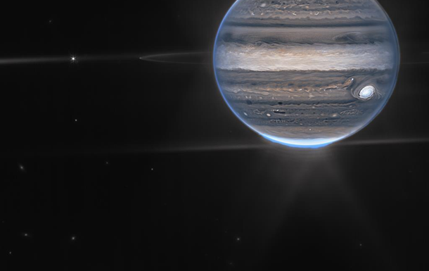
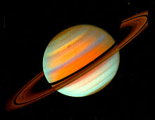

Меркурій
Меркурій Венера
Венера Земля
Земля Марс
МарсЮпітер
 Супутник Юпитера
Супутник ЮпитераСатурн
 Уран
Уран Нептун
Нептун Плутон
Плутон Чотири найбільші супутники Юпітера, що називаються супутниками Галілея, вперше відкриті вченим у 1620 році. На відміну від Юпітера вони тверді: з льоду з камінням або з розплавленого каменю і вулканів. Ганімед — найбільший супутник у Сонячній системі, такого ж розміру, як Меркурій. Найменший супутник — Європа — вкритий замерзлою водою. Біологи вважають, що в морях під льодами можуть існувати деякі форми життя.
Навколо Юпітера рухаються також скупчення темних і світлих хмар із аміаку і кришталиків води. Космічний корабель «Вояджер» надіслав фотографії двох кілець пилу, що оточують планету. Невідомо, з чого складаються ці скупчення — з уламків давніх зіткнень чи це просто частки і камені, притягнуті гравітаційною силою Юпітера.
p>